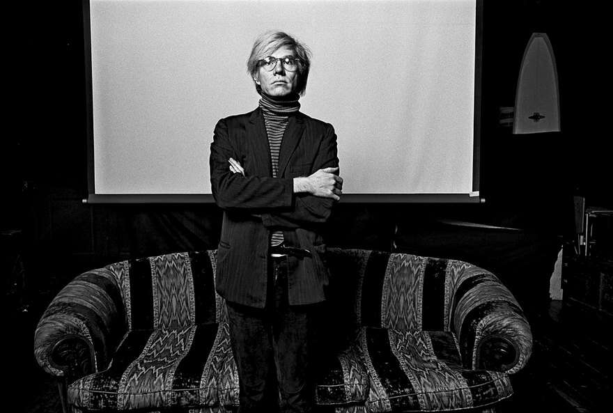

<!DOCTYPE html>
<html>
<head>
	<meta charset="UTF-8">

	<title>Look At Me</title>
</head>
<body bgcolor="#2E2E2E">
	<style>
	input[type="submit"] {
    display: block;
    margin-top: 10px;
    }
   
     aside {
        background: #F5A9F2;
        border-radius: 40px;
        padding: 50px;
        width: 1090px;
        height: 1300px;
        margin: 68px auto;
       
      }

      footer {
      	background: #F6CEE3;
      	border-radius: 20px;
        padding: 32px;
      	width: 300px;
        height: 186px;
        margin: 0 auto;
        float: inherit;
      }
         
    </style>
       	<aside>
	       <CENTER>
	       	<h1>
	       		<font size="+6" color="#2A0A12">
	       			<strong>Художник, изменивший искусство, Энди Уорхол</strong>
	       		</font>
	       	</h1>
	       </CENTER>

	       <br><br><hr>
	       
	        <p> 
	        	<font size="+2">
	        	 <q>
	        		<strong>Всегда, когда ты плачешь, ты мог бы смеяться, у тебя есть выбор</strong>
	        	 </q>
	             <br>Книга <cite>"Философия Энди Уорхола. От А к Б и наоборот".</cite>
	            </font>
	        </p>
         <CENTER>
         	
         </CENTER>

           <br>

	        <p>
	           <font size="+1">
	        	  <i> 
	        	   	  	Э́нди Уо́рхол — американский художник, продюсер, дизайнер, писатель, коллекционер, издатель журналов и кинорежиссёр, заметная персона в истории поп-арт-движения и современного искусства в целом. Основатель идеологии <a title="Универсальный человек, энциклопедист, полимат — тот, чьи интеллектуальные способности, интересы и деятельность не ограничены одной областью знаний и единственной областью их применения, а также индивид, добивающийся ощутимых практических результатов по всем направлениям." href="#">«homo universale»</a>, создатель произведений, которые являются синонимом понятия «коммерческий поп-арт».
	        	  </i>
	          </font>
	        </p>
       
	      <br>

                 <ul> <br>Читайте также:
      	             <li><a href="http://picterra.ru/?p=402">10 самых дорогих работ Энди Уорхола</a></li>
      	             <li><a href="http://iknow.travel/article/lzaj89">НЬЮ-ЙОРК Энди Уорхола</a></li>
                 	<li><a href="http://elle.ua/ludi/blog_o_zvezdah/10-tsitat-endi-uorhola/">10 цитат Энди Уорхола</a></li>
                 </ul>
     
        <footer>

          <form action="#" method="post">
             <label>Ваш логин (email):</label>
               <br><input type="text" name="login" id="login-field">
                 <br>
              <label for="password-field">Пароль:</label>
                <br><input type="password" name="password" id="password-field">
                 <br>
              <label for="information-field">Информация о себе:</label>
                 <br><textarea type="text" name="information" id="information-field"></textarea>
                  <br><input type="checkbox" name="subscribe" id="subscribe-field" checked>
               <label for="subscribe-field">Подписаться на рассылку</label>
                   <br><input type="submit" value="Зарегистрироваться">
          </form>

        </footer>

       </aside>

   </body>
</html>

 
